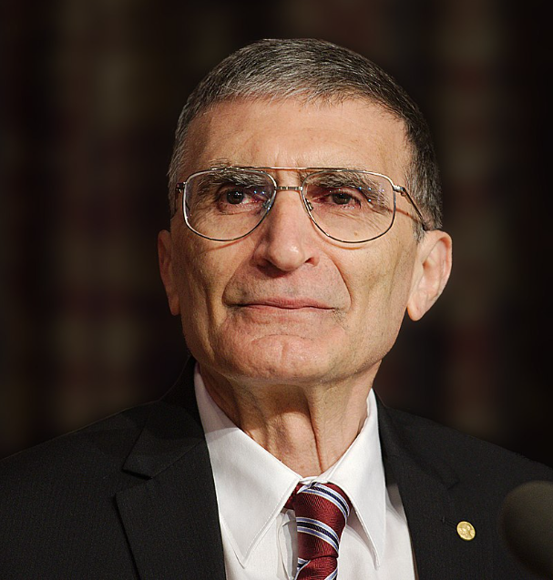

Aziz Sancar Hayatı
Prof. Dr. Aziz Sancar, 1946 yılında Mardin'in Savur ilçesinde doğan, Nobel Ödüllü doktor, akademisyen, biyokimyager ve moleküler biyologdur. 1969 yılında İstanbul Tıp Fakültesi’nden mezun oldu. Daha sonra Dallas’a giderek Dallas Texas Üniversitesi’nde Moleküler Biyoloji dalında doktora yaptı. Yale Üniversitesi'nde DNA onarımı dalında doçentlik tezini tamamladı. 1997 yılından beri ABD'deki Kuzey Carolina Üniversitesi’nde çalışmalarına devam etmektedir.Aziz Sancar, temel eğitimini Mardin’de tamamladı. Lise yıllarında futbolcu olmak istiyordu. Ancak son sınıfta bu sevdasından vaz geçti ve yüksek öğrenimine devam etmek üzere İstanbul’a gitti. Yüksek Lisans ve Doktorasını Amerika’da tamamlayan Aziz Sancar, Türkiye ve Amerika Birleşik Devletleri vatandaşıdır. Biyokimya profesörü Gwen Boles Sancar ile evli olan Aziz Sancar; ABD'de okuyan Türk öğrencilerine yardım etmek ve Türk-Amerikan ilişkilerini geliştirmek amacıyla eşiyle birlikte Aziz & Gwen Sancar Vakfı'nı kurarak ABD'nin Kuzey Carolina eyaletinde “Carolina Türk Evi” isimli bir öğrenci misafirhanesi açmıştır. Sancar, bir röportajında 40 yaşına kadar günde 18 saat çalıştığını, daha sonra ise bunu günde 12 saate düşürdüğünü söylemiştir.
Aziz Sancar Kariyeri
1963 yılında İstanbul Üniversitesi Tıp Fakültesi’ne kaydoldu ve 1969 yılında bu fakülteyi birincilikle bitirdi. Memleketi Savur’da bir sağlık ocağında iki yıl doktor olarak çalıştıktan sonra, kazandığı NATO-TÜBİTAK Bursu ile ABD’nin en prestijli tıp eğitim kurumlarından Johns Hopkins Üniversitesi’ne gitti ve araştırmalarına devam etti. Yaşadığı uyum sorunları nedeniyle Türkiye’ye geri dönen Aziz Sancar, eğitimini tamamlamak istediğinden bir süre sonra Dallas Teksas Üniversitesi’ne gitti. Dallas’ta üniversitenin moleküler biyoloji programına dahil oldu. Sancar, danışmanı Claud Stanley Rupert ile “fotoliyaz” olarak adlandırılan bir çalışma gerçekleştirdi ve klonlanmış bir genin, zarar görmüş DNA onarımında kullanılmasını keşfetti. Bu buluşu ile önce yüksek lisans, ardından 1977 yılında da doktora derecesini aldı. Aziz Sancar, 1977-1982 yılları arasında Yale Üniversitesi Tıp Fakültesinde çalıştı. Bu dönemde nükleotit kesim onarımı araştırmalarına başladı. DNA onarımı dalında doçentlik tezini tamamladı. 1997 yılından itibaren araştırmalarını biyokimya ve biyofizik alanında yaptığı çalışmalarla tanınan ABD'nin Kuzey Carolina eyaletindeki Chapel Hill’de, Kuzey Carolina Üniversitesi biyokimya ve biyofizik bölümünde sürdürmektedir.
Aziz Sancar Ödülleri & Başarıları
DNA onarımı, hücre dizilimi, kanser tedavisi ve biyolojik saat üzerinde çalışmalarını sürdüren Sancar, bugüne değin 415 bilimsel makale ve 33 kitap yayımladı. Sancar, kanser tedavisinde sirkadiyen saat kullanımıyla ödüller aldı. 2001 yılında Amerikan Kimya Cemiyeti tarafından verilen Kuzey Carolina Seçkin Kimyager Ödülü’nü almaya hak kazanan Sancar, 2005 yılında bilim dünyasının en prestijli üyelikleri arasında yer alan ABD Ulusal Bilimler Akademisi’ne seçilerek bu akademiye seçilen ilk Türk bilim insanı oldu. Sancar, 2006 yılında Türkiye Bilimler Akademisi’ne aslî üye olarak seçildi. Aziz Sancar, hasar gören DNA’ların hücreler tarafından nasıl onardığını ve var olan genetik bilgisinin nasıl koruduğunu haritalandıran araştırmaları ile, Amerikalı Paul Modrich ve İsveçli Tomas Lindahl ile birlikte 2015 Nobel Kimya Ödülü’nü kazandı. Sancar, Modrich ve Lindahl 30 yıldan uzun zamandır, birbirlerinden bağımsız olarak bakteri hücreleri üzerinde çalışma yürütüyordu. İsveç Kraliyet Bilimler Akademisi tarafından verilen Nobel Kimya Ödülü, Aziz Sancar’a Alfred Nobel’in ölüm yıldönümü olan 10 Aralık'ta, düzenlenen törenle, İsveç Kralı XVI. Carl Gustaf tarafından takdim edildi. Nobel Ödülü alan ikinci, bilim alanında bu ödülü alan ilk Türk vatandaşı olan Sancar, “Beni ödüle götüren, Atatürk’ün ve Türkiye Cumhuriyeti’nin yaptığı eğitim devrimidir. Dolayısıyla bu ödülün sahibi, Atatürk ve Türkiye Cumhuriyeti’ni temsil eden Anıtkabir Müzesi'dir.” diyerek Nobel Ödülü ile madalya ve sertifikasını Anıtkabir'e teslim etmiştir. Sancar’ın ödülü Anıtkabir’de yer alan “Atatürk ve Kurtuluş Savaşı Müzesi”nde kendisine ayrılan özel alanda sergilenmektedir.
Sancar’ın aldığı en önemli ödüllerin listesi şöyledir:
- ABD Ulusal Bilim Vakfı (National Science Foundation) Genç Araştırmacı Ödülü (1984)
- Amerikan Fotobiyoloji Derneği (American Society for Photobiology) Ödülü (1990)
- ABD Ulusal Sağlık Enstitüsü (National Institutes of Health) Ödülü (1995)
- TÜBİTAK Bilim Ödülü (1997)
- ABD Fen ve Sosyal Bilimler Akademisi (American Academy of Arts and Sciences) Ödülü (2004)
- ABD Ulusal Bilimler Akademisi üyeliği (2005)
- TÜBA (Türkiye Bilimler Akademisi) üyeliği (2006)
- Vehbi Koç Ödülü (2007)
- Nobel Kimya Ödülü (2015)
İlham Verici Sözler
"Ben Türk’üm, o kadar! Mardin’de doğmuşsam, Cizre’de de doğmuşsam, Kars’ta da doğmuşsam ben Türk’üm."
"Gereği kadar öğrenin, aşırıya kaçmak yaratıcılığı öldürüyor. Okumanın yanı sıra düşünmek için de kendinize zaman ayırın. Eğitim ve araştırma için yurt dışına çıkın ama sonra muhakkak ülkenize dönün."
"Saygı istiyorsanız, önce kendinize saygı göstereceksiniz. Herkesten üstün değiliz ama kimseden de aşağı değiliz. Kendimizle iftihar edelim ki başkası da bize saygı göstersin."
"Türkiye için bu kadar önemli olduğunu bilseydim 2 misli çalışır ve 20 yıl önce alırdım bu ödülü."
"Gözünüzü seveyim politikayla uğraşmayın, onu yapanlar var, çok çalışın. Ne yaparsanız, iyi yapmaya çalışın, çalışmadan olmaz. Ben öğrenciyken günde 18 saat çalışırdım. Gazeteler yazmıştı, çok zaman gecelerimi laboratuvarda geçirdim. Çalışmak kendimize, ailemize, milletimize vatan, namus borcudur."